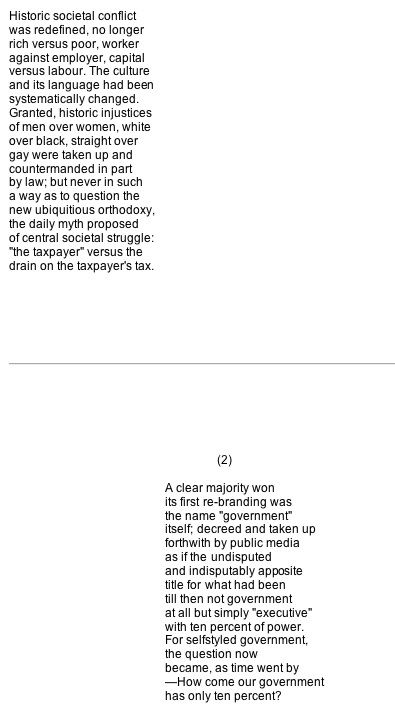
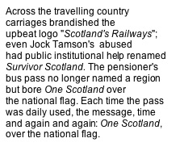

September 30th

Above, my mother as a baby and in her First Communion dress. Her parents were John Mulgrew of Saltcoats and Catherine Reilly from near Newry in Ireland. He was described as a journeyman stonemason on their wedding certificate in 1904. I remember my mother pointing to a section up in the corner of the roof inside the Art Galleries in Glasgow and telling me her father had worked on a section there. But he had taken work in the Ardeer dynamite factory by the time of his marriage and he remained there the rest of his working life.

The Mulgrew family by the time my mother would be not far off 13 when she left school. She, Mary Mulgrew, is the tall girl with the ribbon on the side of her head. Her full name was Mary McConnon Mulgrew; her parents' wedding certificate shows Catherine Reilly’s mother’s maiden name to have been Mary McConnon. It was traditional for the eldest daughter in a family to take as middle name the maiden name of her mother’s mother.
September 25th
My mother kept her school reading book in a drawer until she died. It is inscribed with her name address and "Left school 1920 aged 13 years." The Royal Crown Reader (Book 5) was published in 1917. The following story of British Imperial daring-do here scans neatly over two double pages; but the book has a wide range of material, describing and classifying costume and animals in different parts of the world; the functions of the heart and lungs and other parts of the body, with moral fables (the king who disguised himself as a beggar and found a beggar to be as content as he) with descriptions of feats of engineering such as the printingpress and the laying of the first transatlantic cable. Poetry included Mrs Hemans, Longfellow, Goldsmith, Walter Scott. The syntax and grammar notes are quite advanced for learning by a young child. When I used to ask my mother the meanings of words from library books as a young child I remember her joking “But I only left school at thirteen!”


Published 1917

 Published 1932. 1954 reprint.
Published 1932. 1954 reprint.
September 24th
I used to enjoy learning off by heart the groups of words in Schonell's Essential Spelling List that we got at school.

Above is the opening of the first section for age seven. Below, the last double-page for age twelve.

September 16th

September 8th

Whilst Obama and Kerry are touring the broadcasting studios and CNN and Fox show atrocity videos, a reminder above of this journal’s entry from 2012 on the directing hand in videos now seen as crucial, the focus having switched predictably from proof of gas origin to proof of gas use.
Besides his boasted communication equipment and “media-skills” training of Sryian rebels, Hague by January 10th this year was claiming in Parliament “ We have given training to more than 300 Syrian journalists who are striving to develop alternative sources of media”.
It seems that Syria is the first YouTube propaganda war in western military media management. Over two years ago before the Libyan and now Syrian interventions, it was Twitter feeds from Iran of a sudden were flooding the corporate print and electronic media, indicating, the electronic and print western media vied with one another to ferry, mass unrest and uprising. But all deadly quiet on the Iranian Twitter front a long time now. Its turn hasn't come yet, the route is via Syria.
August 28th
Spent a fruitless hour with my books trying to locate what I was sure was by Neruda some lines that round the world by the edges of the sea children are playing.
Photo on left shows at front three of my brother’s grandchildren taken last Saturday when a crowd of us met for a family gathering at Barassie near Troon. Went a walk on the largely empty beach. The memory went through my head when we were there of an old postcard photo I have on my hard disk of the Ardrossan /Saltcoats beach in the 1900’s not far from where my mother grew up.

August 25th



August 24th
The Scotsman printed today what I sent them, though wrongly described it as "two poems" not "verse excerpts from thoughts-in-progress" as per my subtitle which was not printed. The work was printed in a row of tight sections side by side at the foot of the page looking too much like your actual "chopped up prose" for my liking; this to accommodate a large image they had made about a sweetie shop display based on some of the phrases in the verses.
I will put up the extracts on the website probably tomorrow.
August 21st
The Scotsman contacted me a few weeks ago asking if I could contribute something to a series they have been running of new writing. I found myself eventually working on a succession of verses over a period of ten days or so and have sent them a couple of excerpts under the title The Cesspit and the Sweetie Shop with the subtitle Verse excerpts from thoughts-in-progress.
Looking at what I have been doing I have been taking my cue from the likes of the tradition in Radical Renfrew eg Marian Bernstein whose Collected has just been published: putting topical thoughts and arguments across in a verse whose context is assumed to be a public newspaper that could be read by local folk or the public at large. It appeals to me and is something new for me. I hope to continue with this and have some more by which I may put up on the journal in the future.
I was given the copy date of yesterday for this coming Saturday’s edition. I haven’t heard back but hope it is going in then.
August 15th
While the Egyptian army murders injures and jails and the US the UK etc make ritual pesudo-protest, a reminder of the journal entry here Feb 2nd 2011.

July 31st

July 30th
An old hospital one from years ago.

July 29th
As someone who can’t be arsed with much of the Catholic culture in which I grew up as a child it is yet becoming depressingly clear to me in subtle signs how the referendum / Scottish identity debate in Scotland is inexorably disturbing sectarian undercurrents. A friend for instance who suddenly referred to “Roman” Catholics who hitherto had always referred to them simply as Catholics. It reminds me how when reading in Belfast during the troubles I had to phone for a taxi in the morning from a hotel, and realised as I went to phone that the name “Tom Leonard” is a Taig name as far as the Belfast divide is concerned, it betrays Dublin origins. It was a horrible feeling, that suddenly this thing for which I had no more responsibility nor connection nor interest than a dead man to his tombstone, was in this local context to be taken as the single most important identifier as to my essence. There’s something of that already about just now below the surface in Scotland, and I hate it. It would seem that between myself and some people I had considered to be friends there must now tacitly be taken into consideration something called the Irish Sea. It explains and pathologises my feelings about the referendum, you see...
***********************************
When individuals recount experience of the personally absolute traumatic, there can sure as fate be a writer-as-predator in the wings, sniffing metaphor in the air and a share of the victim-loot sprinkled with literary heft. My unfavourite example for myself is Sylvia Plath in her Ariel poems “Daddy” and “Lady Lazarus”, where Holocaust imagery is gathered up — “my skin/ Bright as a Nazi lampshade” — “A Jew to Dachau, Auschwitz, Belsen./ I began to talk like a Jew. / I think I may well be a Jew" — as psyched-up grist to the mill of a literary-personal denunciation. For some people, perhaps even most inheriting the classroom key-to-literature approach, this is Big Literature Taking on the Big Themes. Actually for me it is how metaphor can be used to don the perpetrator mantle and abuse the victims once again—the while purporting to be on their side, shoulder to shoulder by personal analogy. As Kirkegaard said of Schopenhauer, pessimism isn’t that easy. And neither is catharsis.
July 18th
From correspondence.


July 17th
For a few years Michael Pedersen and Kevin Williamson have been running monthly evenings in Edinburgh under the title Neu Reekie. They consist of a programme of short animation films, music, and two authors each giving a reading of fifteen minutes. The two hosts do sporadic inserts as well.
They have now started a parallel series in Glasgow and this Friday 19th there is one at The Poetry Club, 100 Eastvale Place. It starts at 7pm, and the two guest reader inserts are by Jenni Fegan and myself. The music in the final hour of the show ending 10pm is by the Just Joans and Found.
Admission £8.
July 9th

July 8th

June 19th
Happy days.

June 2nd
Dona nobis pacem.